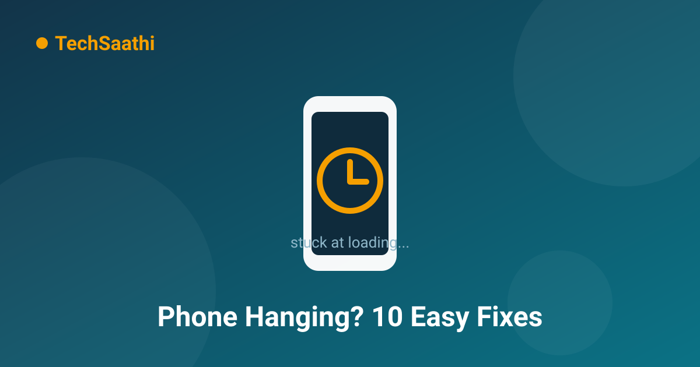

Phone Keeps Hanging? 10 Easy Fixes That Make an Old Phone Feel New

Does your phone take ten seconds to unlock, show a black screen when you open an app, or lag behind while you type? You don't necessarily need a new phone. Most hanging problems come from bad habits and a full storage drive — not from broken hardware. In this article, we'll walk you through 10 fixes that, followed step by step, will make your phone feel smooth again.
Why Phones Hang: The Main Causes
- Full storage — When internal memory is more than 90% full, the phone has no room left to work with
- Too many open apps — Apps running in the background eat up your RAM
- Old or heavy apps — Newer app versions are often too heavy for older phones
- Accumulated cache — Every app keeps collecting junk cache files over time
- Too many widgets and live wallpapers — These run constantly in the background
1. Restart Your Phone First
The easiest fix is the one people do least often. Fully restarting your phone once a week clears the RAM and kills stuck processes. Press the power button and choose "Restart" — simply turning the screen off is not a restart.
2. Keep at Least 20% Storage Free
Open Settings and check your storage. If 28GB out of 32GB is full, that's the biggest reason for the lag. Back up old photos and videos to Google Photos and remove them from the phone. Delete the junk files piling up in your Downloads folder. Aim to keep at least 20% of your storage free at all times.
3. Clear Every App's Cache
Go to Settings → Apps, select the apps you use most (Chrome, Facebook, Instagram and the like) and tap "Clear Cache". This removes accumulated junk and makes the app run fresh. Important: tap "Clear Cache", not "Clear Data" — clearing data also wipes your logins.
4. Uninstall Apps You Don't Use
Remove every app you haven't opened in two months. For pre-installed apps that can't be uninstalled, use "Disable" instead. Fewer apps = less background load = a faster phone.
5. Switch to Lite Versions
Instead of heavy apps like Facebook and Messenger, use their Lite versions or mobile websites. Lite apps use less RAM and less data, and run dramatically better on older phones.
6. Remove Widgets and Live Wallpapers
Weather widgets, news widgets and animated wallpapers keep consuming processor time and RAM in the background, all day long. Remove them and switch to a simple static wallpaper — the difference is clearly visible.
7. Turn Off Animations (Developer Options)
This is a hidden setting that makes the phone feel several times faster:
- Go to Settings → About Phone and tap "Build Number" 7 times (this unlocks Developer Options)
- Go back to Settings and open Developer Options
- Set "Window animation scale", "Transition animation scale" and "Animator duration scale" all to "Animation off" (0x)
This doesn't literally increase the phone's speed — it removes the animations, so every action completes instantly. The experience feels dramatically snappier.
8. Restrict Auto-Updates to Wi-Fi Only
Play Store → Profile icon → Settings → Network preferences → Auto-update apps → select "Over Wi-Fi only". This stops apps from updating in the background and dragging your phone down while you're using it.
9. Stay Away From "Cleaner" and "Booster" Apps
Here's the irony — most RAM boosters, phone cleaners and antivirus apps are themselves the biggest cause of a slow phone. They run constantly in the background and push ads. Android manages its own memory; you don't need them.
10. Last Resort — Factory Reset
If the phone still hangs after trying everything above, a factory reset is the final option. But backing up all your data first is essential — photos, contacts, WhatsApp chats, everything. Go to Settings → System → Reset options → Erase all data. After the reset, the phone will run like it did on day one.
Conclusion
A hanging phone is usually not a hardware failure — 9 times out of 10, it's a habits problem. Restart weekly, keep storage empty, clear cache, and stay away from heavy apps. Adopt these four habits and your phone will run smoothly for years longer.
Frequently Asked Questions (FAQ)
Do I need to buy a new phone to fix the hanging?
Usually no. 9 out of 10 hanging problems come from storage, cache and heavy apps, which the methods in this article fix. Before considering a new phone, always try a factory reset first.
Do RAM booster apps actually work?
No — they actually cause harm. Android manages RAM on its own. Booster apps run in the background consuming the very RAM they claim to free. They're not the cure; they're the problem.
How much free storage should I keep?
Keep at least 20% of your internal storage free at all times. On a 64GB phone, that's roughly 12-13GB. This gives the system room to work while you use apps.
Found this useful? Share it with friends whose phones keep freezing! 😊